Diário do Olimpo:Viva a Mitologia Grega
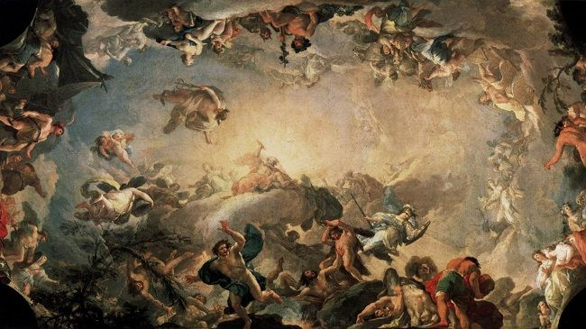Deuses do Olimpo: O Poder Divino:
- Os Jogos Píticos Para se redimir pela morte de Píton, Apollo criou os Jogos Píticos, que eram celebrados a cada quatro anos em Delfos. Esses jogos eram uma das competições mais importantes da Grécia Antiga, assim como as Olimpíadas
- A Vitória sobre Píton Logo após seu nascimento, Apollo enfrentou a serpente Píton, que perseguia sua mãe, Leto. Com seu arco e flechas, ele derrotou a criatura e estabeleceu o famoso Oráculo de Delfos, tornando-se o deus da profecia
- 🎶 Apollo e a Música Apollo era um mestre da música e da poesia. Ele recebeu uma lira de Hermes e se tornou o patrono das artes. Seu talento musical era tão grandioso que inspirou poetas e músicos por toda a Grécia
- Apollo e Dafne Apollo se apaixonou pela ninfa Dafne, mas ela fugiu dele. Para escapar, Dafne pediu ajuda aos deuses e foi transformada em um louro, árvore que se tornou um dos símbolos de Apollo
- ⚔️ Apollo na Guerra de Troia
Durante a Guerra de Troia, Apolloe.
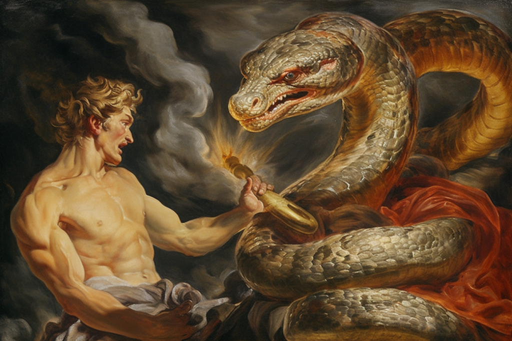
Mitos de Apollo
-Apollo e Cassandra: A Profecia Ignorada Apollo se apaixonou por Cassandra, filha do rei de Troia, e lhe concedeu o dom da profecia. No entanto, quando ela rejeitou seu amor, ele a amaldiçoou para que ninguém acreditasse em suas previsões. Isso levou à tragédia de Troia, pois Cassandra previu a destruição da cidade, mas ninguém lhe deu ouvidos.
-Apollo e o Castigo de Níobe Níobe, rainha de Tebas, zombou de Leto, mãe de Apollo e Ártemis, dizendo que era superior por ter mais filhos. Como punição, Apollo e Ártemis mataram quase todos os filhos de Níobe, deixando-a em desespero. Segundo o mito, ela fugiu para a montanha e foi transformada em pedra, de onde suas lágrimas formaram um rio.
-Apollo e o Corvo Negro Apollo tinha um corvo branco como mensageiro. Um dia, ele enviou o corvo para vigiar sua amada Corônis, mas o pássaro trouxe notícias de sua traição. Furioso, Apollo amaldiçoou o corvo, tornando suas penas permanentemente negras. Desde então, os corvos são vistos como símbolos de mau presságio.
-Apollo e Faetonte: A Tragédia Solar Faetonte, filho de Hélios, pediu para conduzir a carruagem do Sol. Incapaz de controlá-la, ele quase destruiu a Terra, queimando partes da África e criando o deserto do Saara. Para impedir um desastre maior, Zeus o atingiu com um raio, fazendo-o cair no rio Erídano. Apollo, que já era associado ao Sol, foi cada vez mais ligado a essa função após esse evento.
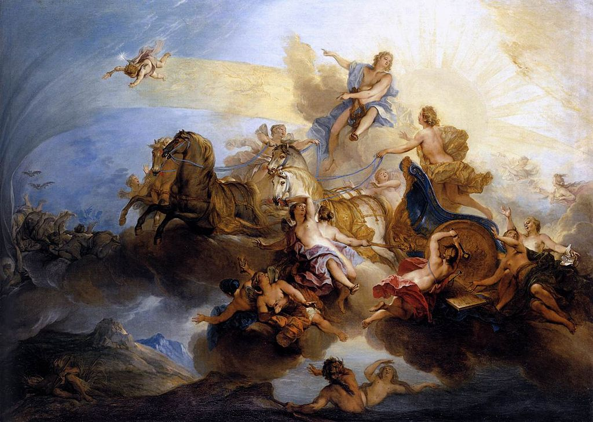 - Esculturas e vasos retratavam cenas mitológicas como os 12 trabalhos de Hércules ou o nascimento de Afrodite. 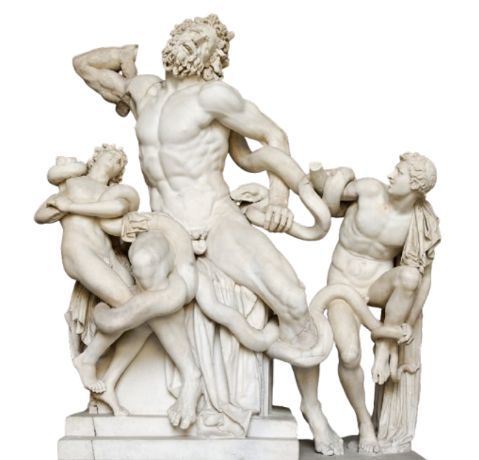
- Os templos gregos, como o Partenon, eram dedicados a deuses e decorados com relevos que contavam suas histórias. 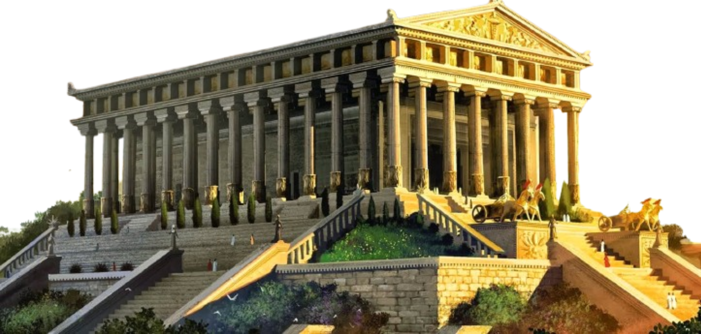
- A arte era uma forma de expressar valores culturais, como heroísmo, honra e destino.
- Com a redescoberta da Antiguidade, artistas como Botticelli e Michelangelo voltaram-se aos mitos gregos.
- Obras como O Nascimento de Vênus (Afrodite) celebram a beleza idealizada e o simbolismo mitológico. 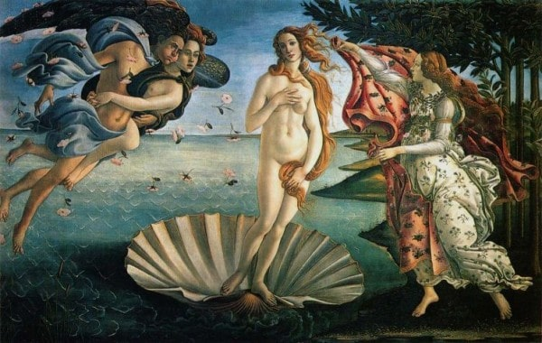
- A mitologia foi usada para explorar o corpo humano, a emoção e a narrativa visual.
- Artistas modernos reinterpretaram os mitos com novas linguagens: Picasso, por exemplo, abordou o Minotauro como símbolo de conflito interior.
- A mitologia passou a ser usada como metáfora psicológica, social ou existencial.
- Ela continua presente em cinema, quadrinhos, ilustrações e design, mostrando sua relevância contínua. 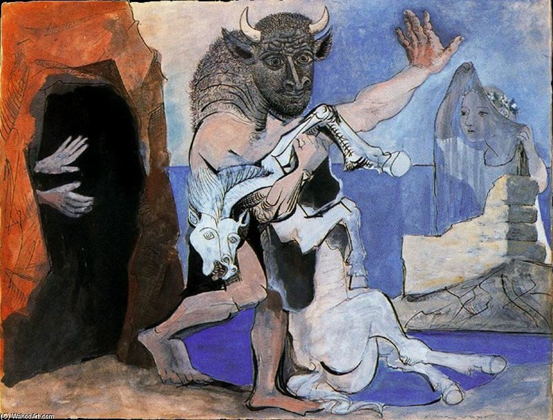
Zeus – O Rei dos Deuses
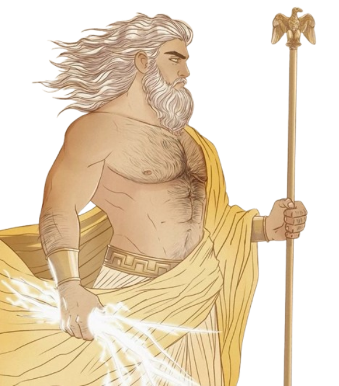Zeus era o soberano do Olimpo e governava os céus e os trovões. Com seu poderoso raio, impunha ordem entre os deuses e mortais. Pai de inúmeros heróis e divindades, ele simboliza autoridade, justiça e poder absoluto.
História de Zeus⚔ Atena – A Deusa da Sabedoria e da Guerra Estratégica
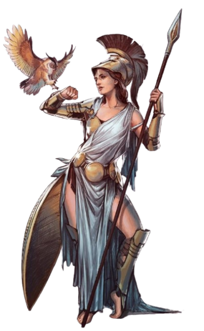Filha de Zeus, Atena era conhecida por sua inteligência e habilidades táticas na guerra. Protetora de Atenas, sua cidade-estado, ela também era patrona da filosofia e das artes. Seu símbolo principal é a coruja, representando sabedoria.
História de AtenaPoseidon – O Senhor dos Mares
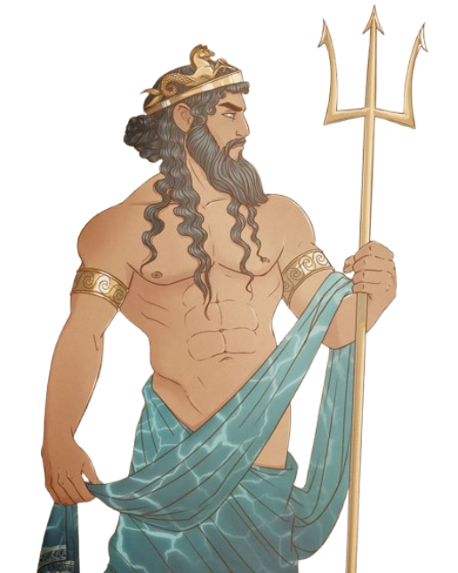Irmão de Zeus, Poseidon controlava os oceanos e era temido por seu temperamento imprevisível. Criador dos cavalos e das tempestades, ele carregava seu icônico tridente, capaz de causar terremotos e maremotos.
Afrodite – A Deusa do Amor e da Beleza
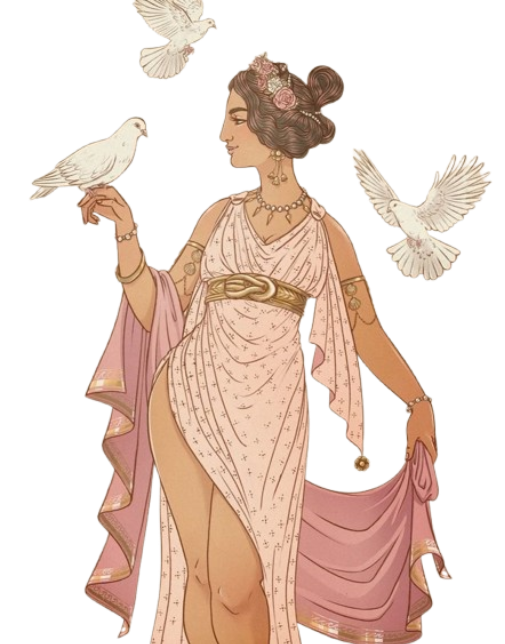Nascida das águas, Afrodite era responsável por despertar paixões e inspirações entre os mortais e deuses. Sua influência ia além do amor romântico, tocando a arte, a sedução e a fertilidade.
Hades – O Guardião do Submundo
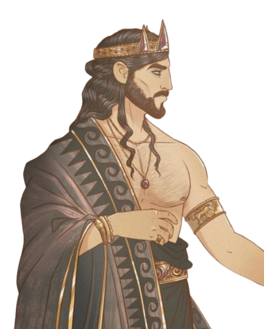Diferente de seus irmãos, Hades não reinava no Olimpo, mas governava o mundo dos mortos. Embora temido, ele mantinha equilíbrio sobre as almas e era esposo de Perséfone, cuja jornada ao submundo originou as estações do ano.
☀️ Apolo – O Deus da Luz e das Artes
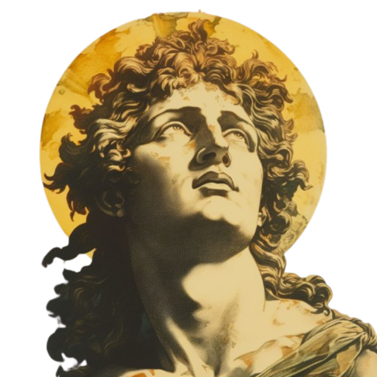Filho de Zeus e irmão gêmeo de Ártemis, Apolo era o deus do sol, música, poesia e profecia. Seu templo em Delfos era famoso por seu oráculo, que guiava reis e guerreiros.
Mitos Gregos:
Os deuses da mitologia grega não eram apenas divindades distantes — eram reflexos ampliados da alma humana, com virtudes luminosas e falhas arrebatadoras que moldaram o destino dos mortais.
A Criação do Mundo No princípio, só existia o Caos. Deste vazio surgiram Gaia (a Terra), Urano (o Céu) e outros seres primordiais. Gaia gerou os Titãs, que foram governados por Cronos até serem derrotados por Zeus e os outros deuses do Olimpo, estabelecendo uma nova ordem divina.
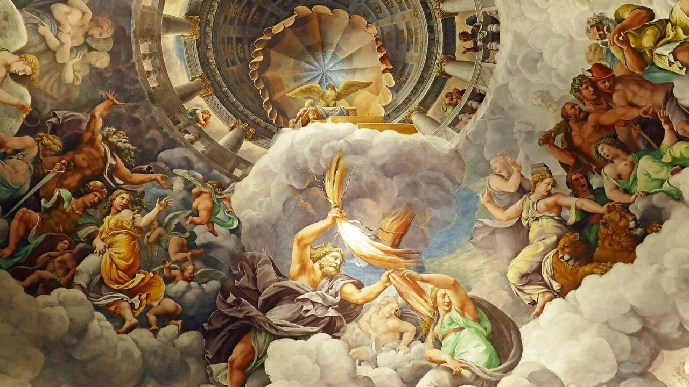O Rapto de Perséfone Hades, senhor do submundo, apaixonou-se por Perséfone e a levou para seu reino. Sua mãe, Deméter, a deusa da agricultura, ficou devastada e fez a terra murchar. Zeus interveio e um acordo foi feito: Perséfone passaria parte do ano no Olimpo e outra no submundo, originando assim as estações do ano.
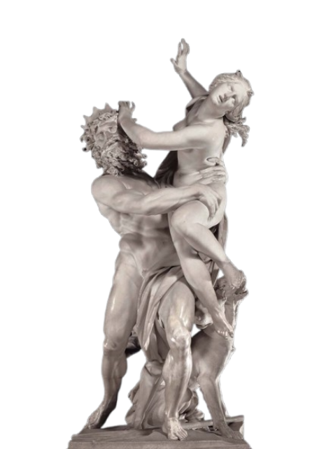Prometeu e o Roubo do Fogo Prometeu, um titã amigo dos humanos, roubou o fogo dos deuses para entregá-lo à humanidade, trazendo luz e conhecimento. Como punição, Zeus o acorrentou a uma montanha onde uma águia devorava seu fígado todos os dias.
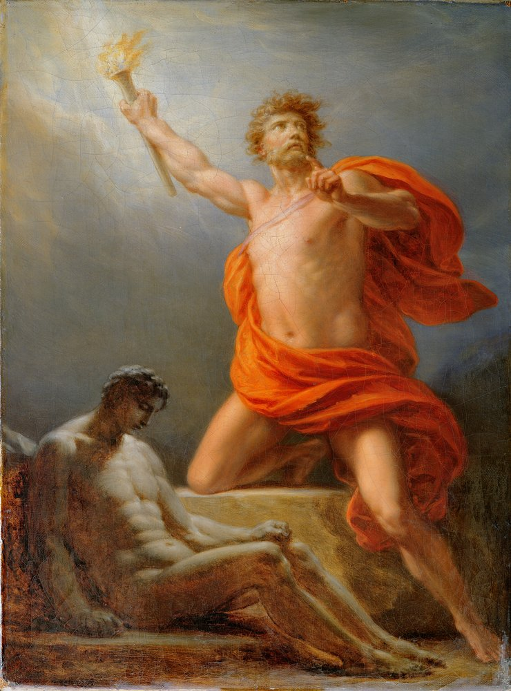Os Doze Trabalhos de Hércules Hércules, filho de Zeus, foi condenado a realizar doze trabalhos impossíveis como forma de redenção. Entre eles, matou o Leão de Nemeia, capturou o Cérbero, o cão do submundo, e limpou os estábulos de Áugias em um único dia.

A Guerra de Troia e o Cavalo de Madeira A guerra começou quando Páris, príncipe troiano, raptou Helena, esposa do rei Menelau. Após anos de batalha, os gregos construíram um enorme cavalo de madeira como armadilha, levando à destruição de Troia.
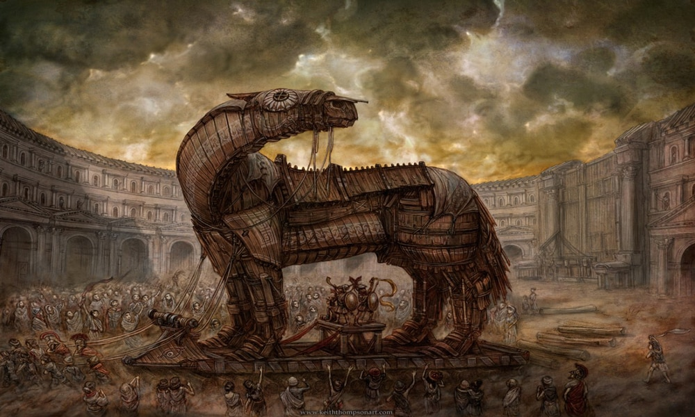Descobrir mais sobre os mitos envolvendo a mitologia grega pode ser um ótimo caminho para expandir mas os seus conhecimentos
Tributo a Apollo: Um Legado Inesquecível
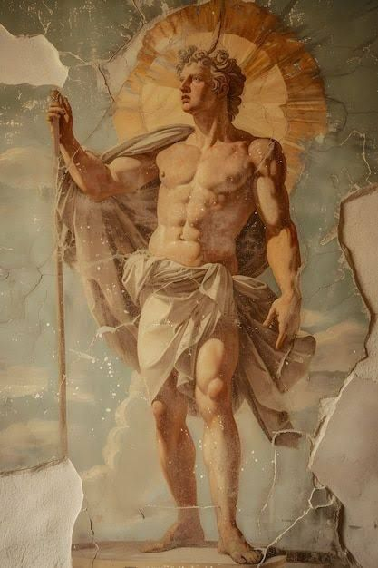-
ajudou os troianos, protegendo guerreiros como Eneias e Heitor. Ele também enviou uma praga contra os gregos e guiou Paris para acertar a flecha fatal no calcanhar de Aquiles
-Curiosidades e Mistérios
🎶 Apollo não inventou a lira Embora seja frequentemente associado à lira, Apollo não foi seu criador. O instrumento foi inventado por Hermes, que o ofereceu a Apollo como parte de um acordo depois de roubar seu gado.
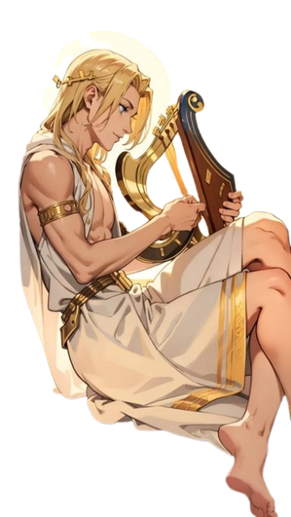Ele matou seus próprios filhos Em um momento de fúria, Apollo matou seus próprios filhos após ser traído por sua amada Corônis. Ela o enganou, e ao descobrir a traição, Apollo ficou tão furioso que acabou cometendo esse ato trágico.
Apollo ajudou os troianos na Guerra de Troia Diferente de muitos deuses que apoiaram os gregos, Apollo ajudou os troianos. Ele guiou a flecha de Páris, permitindo que atingisse Aquiles no calcanhar, causando sua mort
Apollo é um símbolo de grandeza, conhecimento e conquistas extraordinárias. Seja na mitologia, na ciência ou em momentos pessoais, sua influência transcende gerações. Este espaço é dedicado a celebrar sua importância e impacto duradouro.
-origem
Apollo tem uma origem fascinante na mitologia grega! Ele é filho de Zeus e Leto, e nasceu na ilha de Delos. Sua mãe, Leto, enfrentou dificuldades para dar à luz porque Hera, esposa de Zeus, proibiu que ela encontrasse um lugar seguro para o nascimento. No entanto, Poseidon ajudou criando uma ilha flutuante, Delos, onde Leto finalmente pôde ter seus filhos: Apollo e sua irmã gêmea, Ártemis. 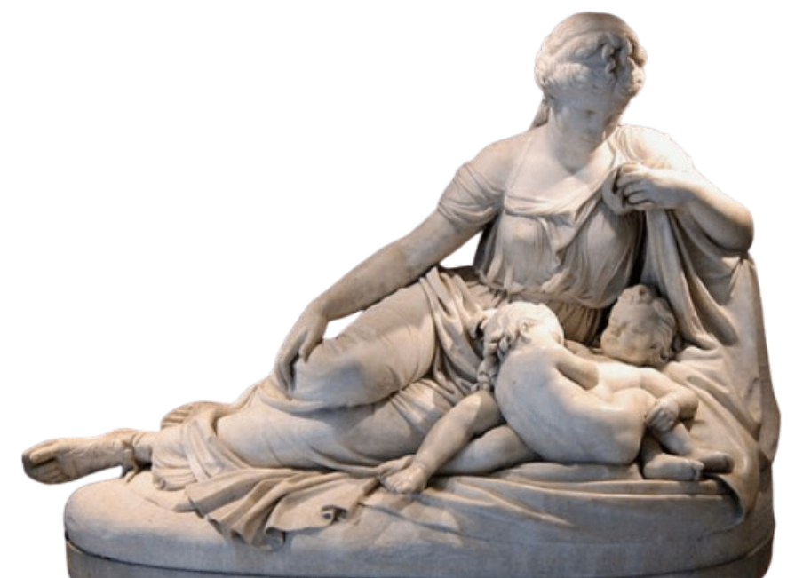 Desde o início, Apollo demonstrou habilidades extraordinárias. Logo após nascer, ele foi alimentado com néctar e ambrosia, tornando-se adulto rapidamente. Um dos primeiros feitos de Apollo foi derrotar a serpente Píton, enviada por Hera para perseguir sua mãe. Ele a matou com suas flechas e estabeleceu seu famoso Oráculo de Delfos, tornando-se um dos deuses mais influentes da Grécia Antiga. Apollo é associado a diversas áreas, incluindo música, profecia, medicina, artes e o Sol. Embora inicialmente não fosse considerado o deus do Sol, essa característica foi atribuída a ele no período helenístico. Seu culto era amplamente difundido, com templos importantes em Delfos e Delos.
-Momentos marcantes
Mitologia Grega na Arte:
mitologia grega teve — e ainda tem — um impacto profundo na arte ocidental, servindo como fonte inesgotável de inspiração para artistas ao longo dos séculos. Vamos explorar como isso se manifesta:
Na Grécia Antiga
No Renascimento
Na Arte Moderna e Contemporânea
-Por que a mitologia grega ainda encanta? Porque fala de nós. Mesmo habitando o Olimpo, os deuses gregos são incrivelmente humanos: sentem amor, orgulho, raiva e arrependimento. Suas histórias são cheias de paixão, dilemas morais e jornadas heroicas que espelham nossas próprias experiências. São narrativas ricas em simbolismo e beleza, que inspiram artistas há milênios — da escultura clássica aos filmes contemporâneos. Ao misturar razão com emoção, estética com reflexão, a mitologia grega continua viva, oferecendo não só entretenimento, mas também sabedoria sobre a alma humana.
A Mitologia grega me encanta porque fala de nós. Mesmo habitando o Olimpo, os deuses gregos são incrivelmente humanos: sentem amor, orgulho, raiva e arrependimento. Suas histórias são cheias de paixão, dilemas morais e jornadas heroicas que espelham nossas próprias experiências. São narrativas ricas em simbolismo e beleza, que inspiram artistas há milênios — da escultura clássica aos filmes contemporâneos. Ao misturar razão com emoção, estética com reflexão, a mitologia grega continua viva, oferecendo não só entretenimento, mas também sabedoria sobre a alma humana.
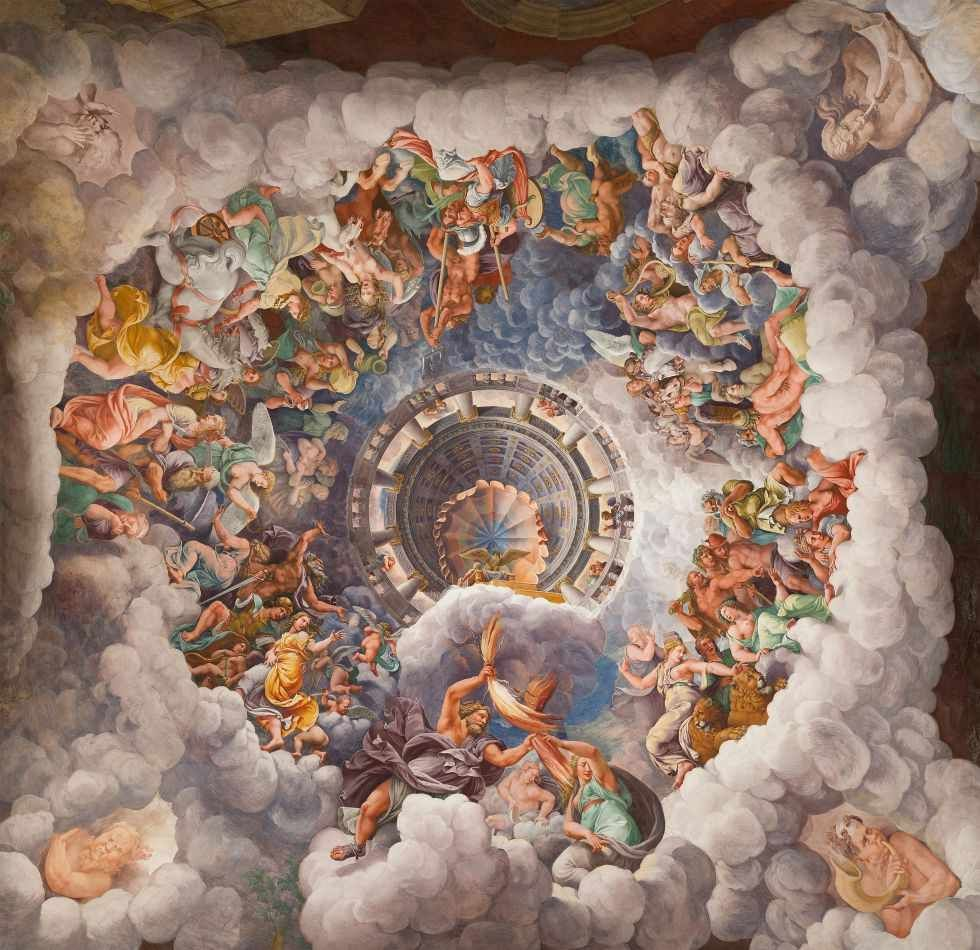